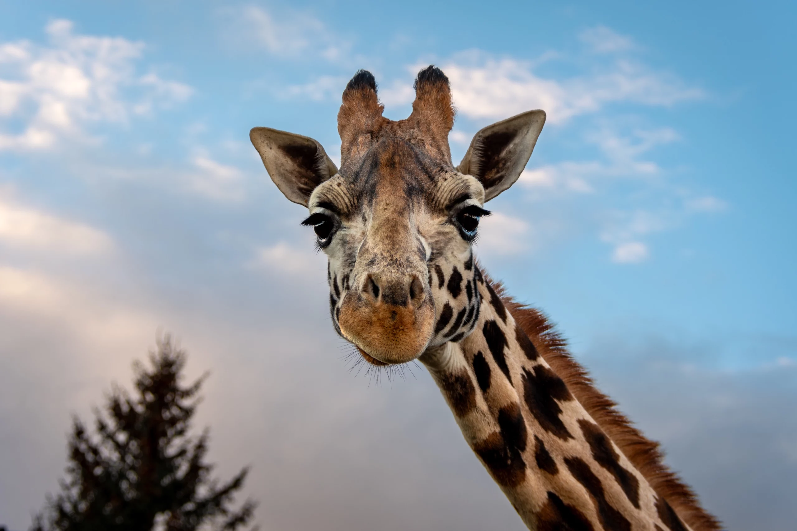
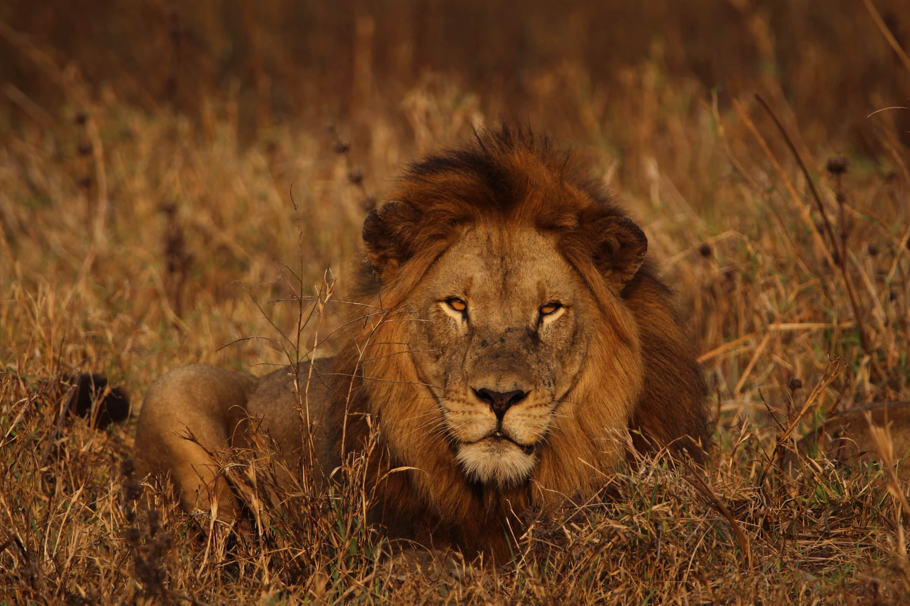
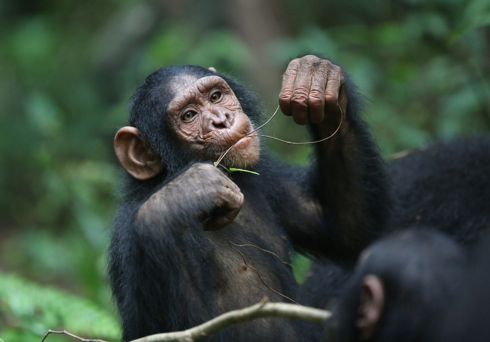
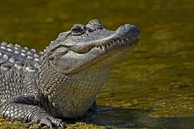

- Bears
- Ollie
- Mona
- Giraffes 
- Frankie
- Coconut
- Lions 
- Mella
- Karl
- Monkeys 
- Cookie
- Earl
- Banana Pudding
- Alligators 
- Wren
- Aspen
- mika

Wild bears are solitary animals that typically eat plants and small animals. They have a strong sense of smell, allowing them to detect food from a distance. Bears hibernate in winter and are active in summer, searching for food. Their claws are sharp, enabling them to climb trees and catch food. Although bears are large, they usually avoid conflict when threatened. Learn More Information
Wild giraffes are gentle herbivores, primarily feeding on tree leaves and shrubs, with a particular preference for acacia tree leaves. They have long necks and legs, allowing them to easily reach food high up in trees. Giraffes are usually social animals and prefer to live in groups with others of their kind. They have excellent vision, enabling them to spot potential danger from a distance. Despite their large size, giraffes are generally calm and move at a slow pace. When threatened, they rely on their speed to escape danger. Learn More Information
Wild lions are social carnivores that typically prey on large herbivores like zebras and antelopes. They have powerful strength and sharp teeth, allowing them to hunt and tear apart their prey. Lions usually hunt at night or early in the morning, spending most of the day resting. Their social structure is unique, typically consisting of a group of lionesses and a few male lions. The male lions are responsible for protecting the territory, while the lionesses do most of the hunting. Lions are known for their strong cooperation and team hunting skills.Learn More Information
Wild monkeys are typically social primates that live in various environments such as tropical rainforests, grasslands, and mountains. They primarily feed on fruits, plants, insects, and small animals. Monkeys are highly intelligent and skilled at using tools; some even use rocks and sticks to obtain food or defend themselves. Their social behavior is complex, often communicating through sounds, body movements, and facial expressions. Monkeys are agile, adept at climbing and jumping, allowing them to move quickly through trees and shrubs. When facing danger, monkeys usually alert their group with warning calls. Learn More Information
Alligators are large, carnivorous reptiles primarily found in freshwater environments like rivers, lakes, and swamps. They have powerful jaws, sharp teeth, and thick, armored skin. Alligators are ambush predators, meaning they wait for their prey to come close before striking. They are cold-blooded, relying on the sun to regulate their body temperature, and often bask in the sun. Generally solitary, they only interact in groups during mating season or when a mother is caring for her young.Learn More Information